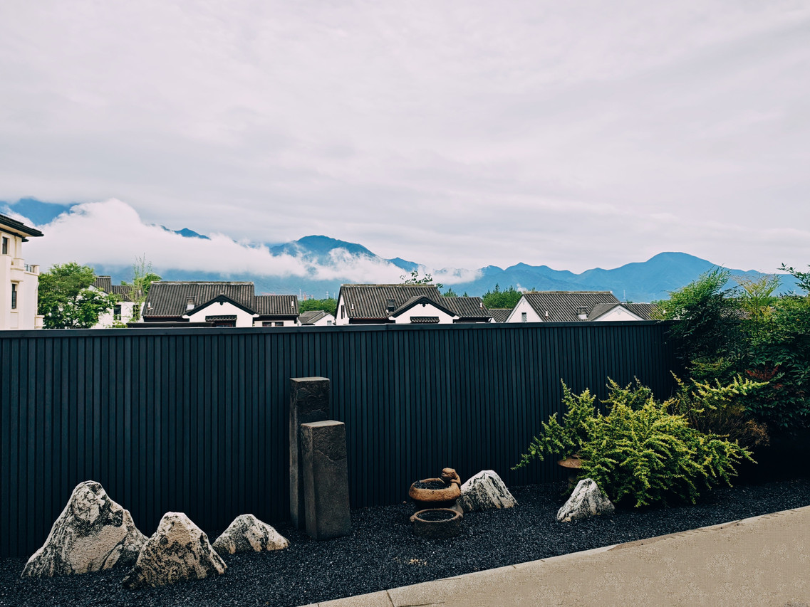

桐庐
/
玩乐地
/
芦茨村 / 马岭古道
芦茨村 / 马岭古道
富春江畔 · 溪水浅滩 · 慢生活

桐庐芦茨村
建议从携程/App查看最新实拍
芦茨村实景 · 照片待补充
富春江
溪水浅滩
慢生活
免费
项目
详情
地址
浙江省杭州市桐庐县富春江镇芦茨村
门票
免费
营业时间
全天开放
特点
富春江畔的古村落，溪水清澈可踩水
马岭古道起点，可轻徒步
人少安静，适合傍晚闲逛
适合谁
踩水
散步
注意：
距县城约 26 分钟车程。
商业化程度低，餐饮选择不如县城。
介绍
芦茨村是《富春山居图》实景地之一，溪水、古桥、慢生活，适合不赶景点、带孩子在溪边玩水的下午。